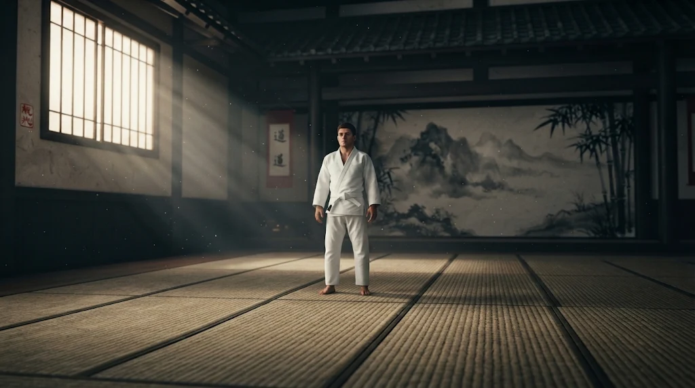
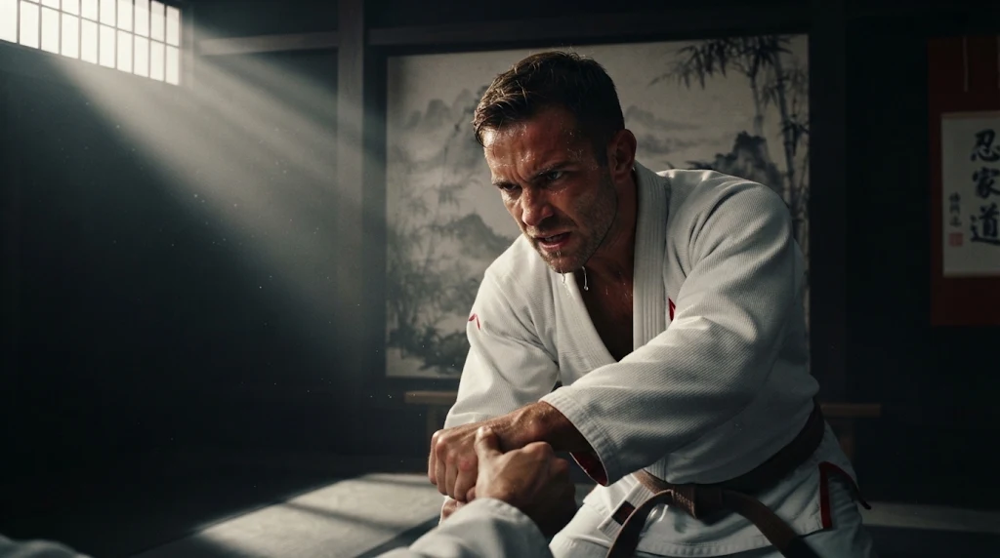
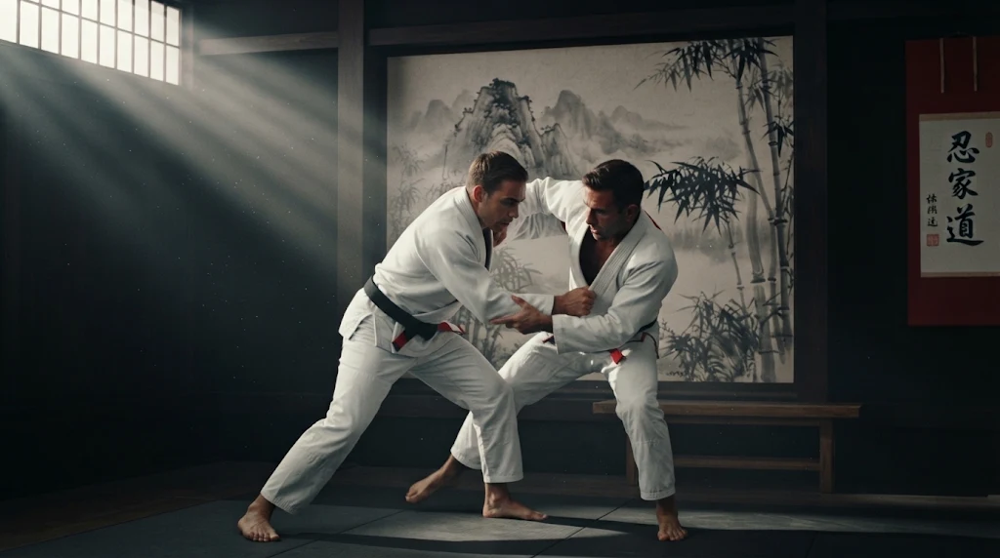
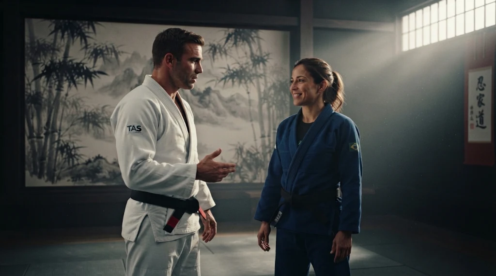

Mais do que uma luta...
o Jiu-Jitsu é um caminho de
disciplina e evolução constante.
O Jiu-Jitsu entrou na minha vida da forma inesperada, mas ficou por um propósito.
Ao longo do tempo, aprendi que o tatame vai além de técnicas e posições.
É um lugar de desafios, aprendizados e pessoas que tornam o caminho mais leve e significativo.

O Jiu-Jitsu me mostrou que o verdadeiro desafio não está no adversário, mas em mim mesmo.

Aquele primeiro contato com o tatame despertou algo diferente. Eu não imaginava o quanto aquele solta vidas.
FASE 01
Aprendi que a constância supera o talento. É a paciência, mesmo quando a motivação não aparece.
FASE 02
O tatame me ensina a lidar com o desconforto, os erros e as derrotas. Cada dificuldade é parte de aprendizado.
FASE 03
Hoje, a evolução faz parte de minha atividade. Mudando minha mente, minha rotina e a forma como encaro a vida.
FASE 04O Jiu-Jitsu pode e é muito mais do que uma jornada de tatame. Ele te disciplina, te ensina a ter controle e te conecta com pessoas que compartilham o mesmo respeito evolutivo.
CONHEÇA MAIS →